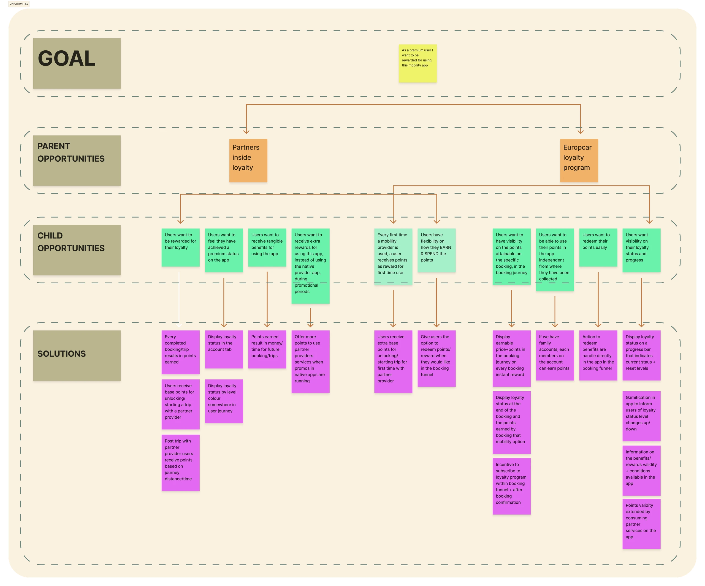
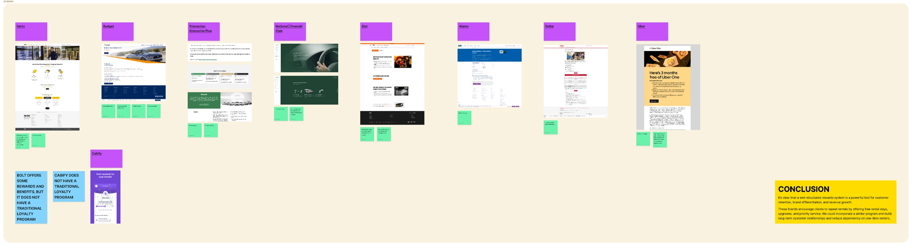
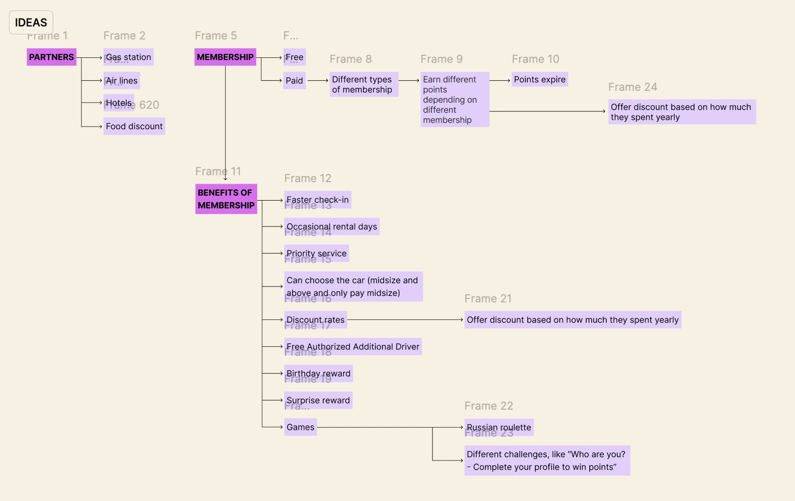
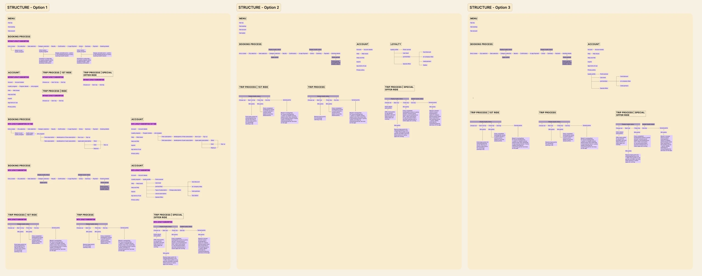
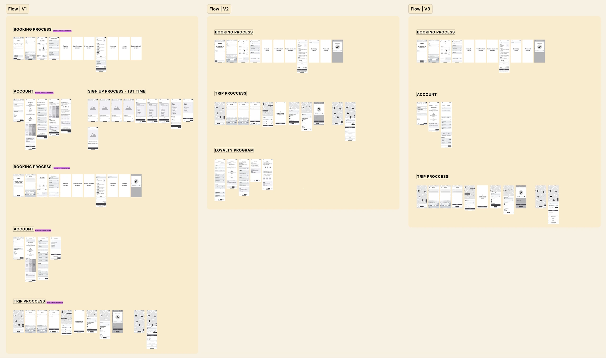

VW ×EUROPCAR
Everyday mobility.
A reason to return.
I explored a loyalty experience for the Europcar Mobility App, translating market research into three journey proposals and supporting wireframes.
Explore the thinking
- MY ROLE
- UX Designer
- TIMELINE
- 2 months
- TOOLS
- Figma
- SECTOR
- Mobility
CONTEXT + PROBLEM
Beyond a booking.
A longer relationship.
How could loyalty become a useful part of the rental journey?
The Europcar Mobility App lets customers book cars and vans, manage rentals and access offers from their phone. This project explored a loyalty programme within that existing experience.
The business goal was to build longer-term customer relationships, support retention and reduce dependency on online rental intermediaries. My role covered benchmarking, information architecture, journey exploration and wireframes.
Benefits people understand.
Journeys they can use.
RESEARCH + REFRAME
Understand the market.
Find the connection.
I reviewed competitors and loyalty patterns to understand how programme benefits were presented and linked to customer activity.
The research helped frame opportunities within the app: connect programme value, customer activity and the wider rental experience.
Retention
Give customers reasons to return.
Programme value
Make the benefits understandable.
Journey fit
Connect loyalty with the existing app experience.
Exploration
Compare possible programme structures.

Competitor benchmarking informed the programme exploration.
DEFINING THE EXPERIENCE
Three proposals.
Something to compare.
I explored different programme structures, benefits and touchpoints before moving into wireframes.
The information architecture made the alternatives tangible, giving the team concrete flows to compare before the next design phase.
EXPLORE THE WORK · ENLARGE FOR DETAIL

Journey architecture board exploring membership, partners and loyalty benefits
Connect value to the journey.
Mapping the programme brings its benefits and touchpoints into a structure that can be discussed.

Three information architecture proposals for the loyalty programme
Explore three possible structures.
The alternatives organise the programme flows and their key touchpoints before detailed design.

Wireframe boards for three loyalty journeys inside the mobility app
Make the journeys tangible.
Wireframes explore how the proposed flows could be experienced within the app.
OUTCOME + REFLECTION
A direction to discuss.
A foundation to build on.
This phase produced a research-informed direction for the loyalty programme, three information architecture proposals and supporting wireframes.
A grounded direction
Market research connected the loyalty opportunity with the rental experience.
Concrete alternatives
Three programme structures made different approaches easier to compare.
A starting point for design
Supporting wireframes gave the team material for the next design phase.


ONE CASE STUDY. PART OF A BIGGER PICTURE.